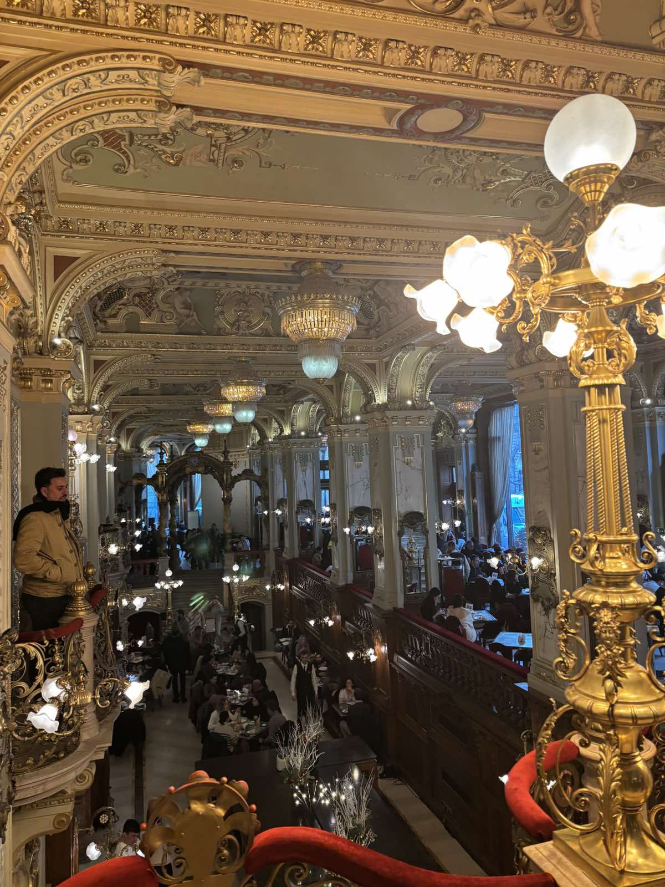

Патувањата ми се една од најголемите страсти. Сакам да запознавам нови места, луѓе и култури, дури и кога тоа значи само кратка авантура во соседен град. Секое патување ми носи нови искуства и инспирација која ми помага да гледам пошироко и поотворено.
Верувам дека патувањето не е само за уживање, туку и за учење – секоја нова дестинација ми отвора нови перспективи и ми дава свежа енергија. Кога патувам, уживам во прошетки по улиците, во локалната храна и во моментите кога можам да се поврзам со природата.
Со секое ново патување, се чувствувам посилна, посвесна и подготвена за нови предизвици.
Подолу можете да видите повеќе фотографии од различни патувања, бидејќи сметам само дека преку фотографија може да биде уловена убавината на различни места низ светот.